KOLYELER:
 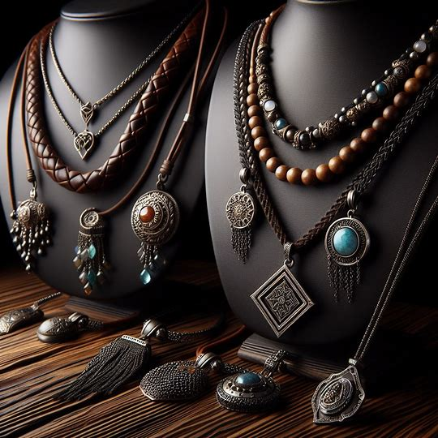
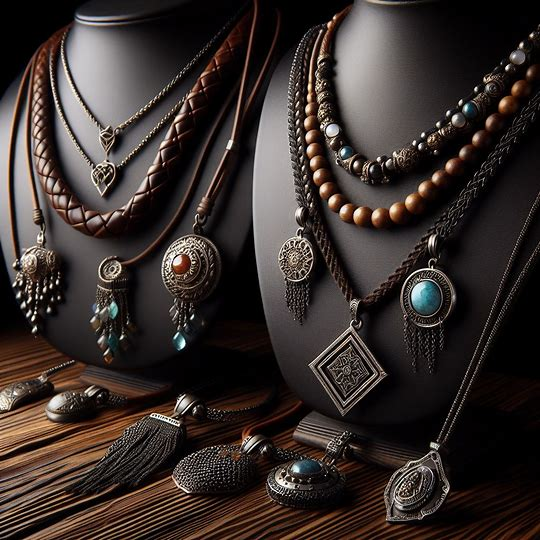
 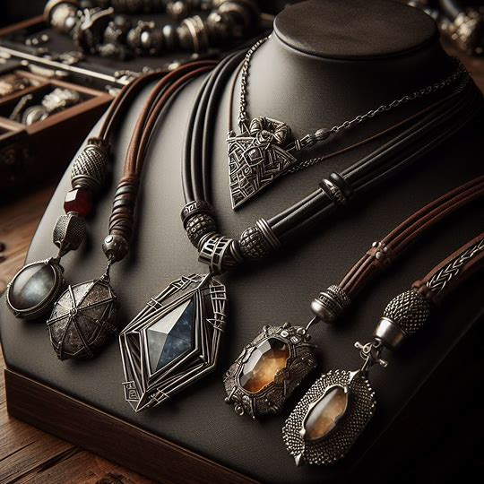
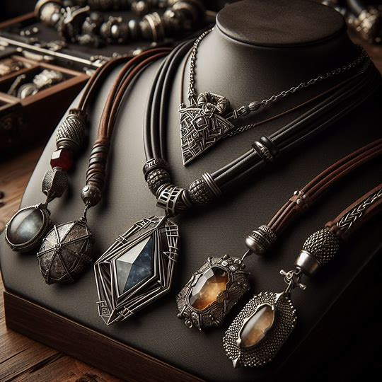
YÜZÜKLER:


BİLEKLİKLER:
 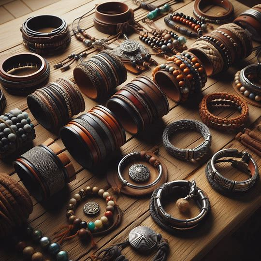
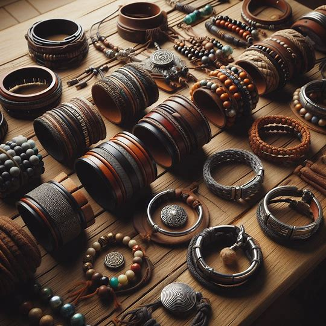
 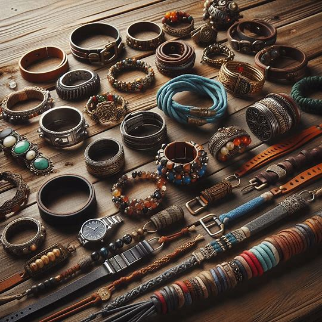
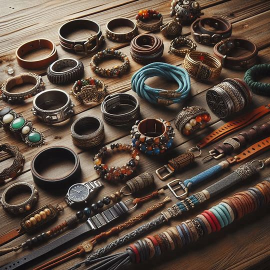
Erkekler için özel tasarlanmış ve karakterinizi yansıtan takılarla dolu bir dünyaya hoş geldiniz: Nisay Jewelry'nin erkek koleksiyonu!
Her bir parça, güçlü ve şık bir duruşu yansıtan özel tasarımlarla donatılmıştır. Maskülen ve zarif detayların buluştuğu bu koleksiyon, modern erkeklerin tarzını tamamlayacak benzersiz takılar sunar.
Bileziklerimizde, sade ve minimalist çizgilerden, cesur ve iddialı tasarımlara kadar geniş bir yelpazede seçenekler bulunmaktadır. Kaliteli malzemeler ve özenli işçilikle hazırlanan her bir parça, günlük hayatınızda veya özel günlerde stilinizi tamamlayacak eşsiz bir aksesuardır.
Küpelerimiz ve kolyelerimiz, güçlü ve zarif bir ifade arayan erkekler için tasarlanmıştır. Modern ve sofistike detaylarla işlenmiş olan bu takılar, karakterinizi yansıtan bir tarz oluşturmanıza yardımcı olur.
Nisay Jewelry'nin erkek koleksiyonu, kaliteden ödün vermeyen ve tarzınızı ön plana çıkaran takılarla doludur. Siz de kendinize özgü bir tarz yaratmak ve kişiliğinizi yansıtan takılarla şıklığınızı tamamlamak için koleksiyonumuzu keşfedin.
Tarzınızı ifade etmenin ve gücünüzü yansıtmanın zamanı geldi!
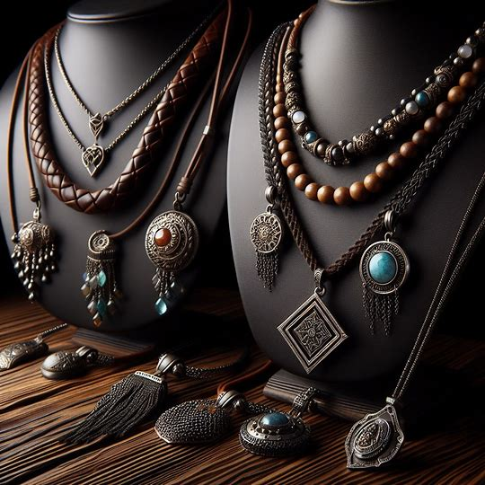
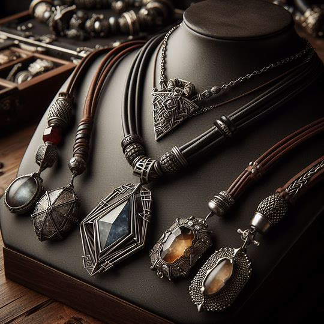
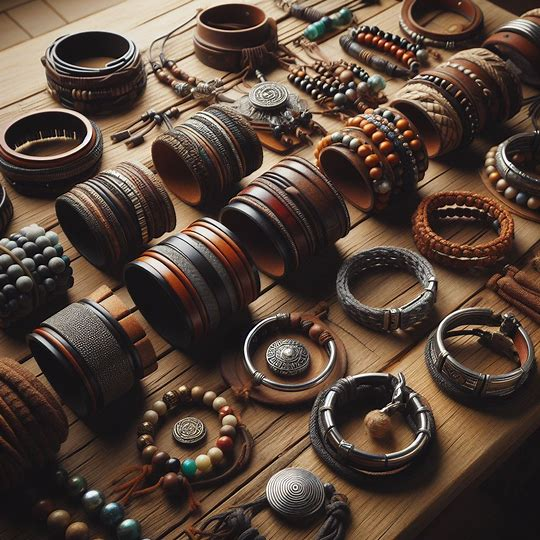
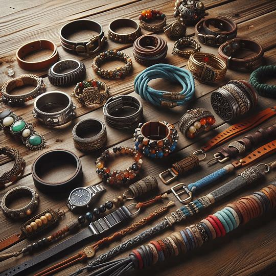